당구장에서는 복잡한 준비보다 첫 공이 먼저죠. 에버보드는 종목과 선수, 경기 규칙을 정하면 바로 점수판을 사용할 수 있습니다.
처음이라면, 아래 다섯 탭부터.
에버보드는 화면 아래 다섯 탭으로 나뉩니다. 경기는 새 경기에서 시작하고, 끝난 경기는 기록과 통계에 저절로 쌓입니다.
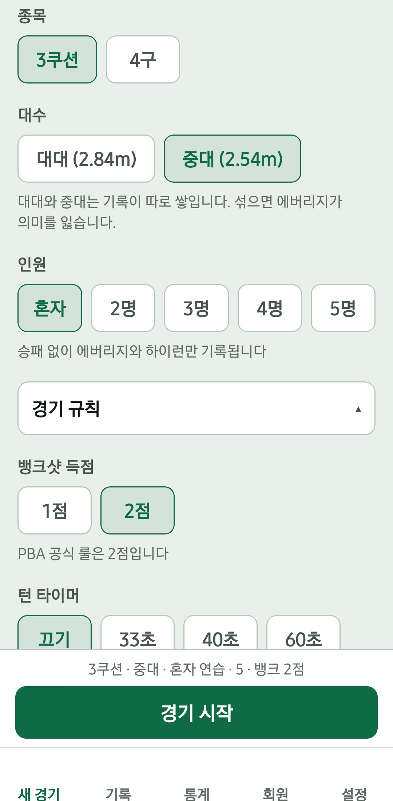
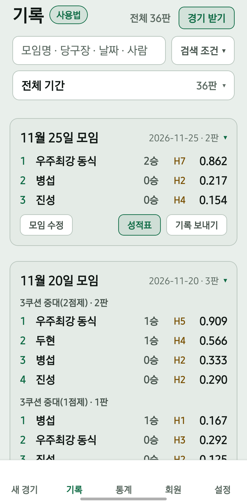
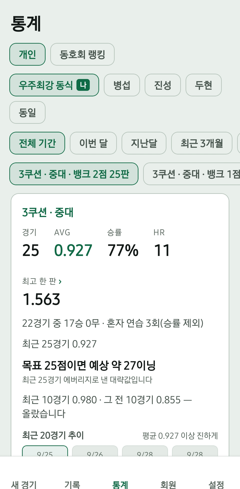
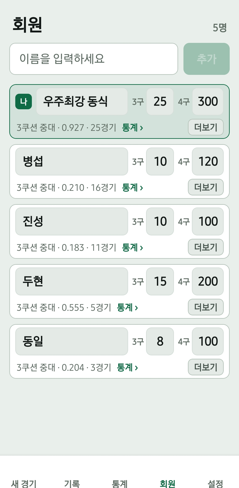
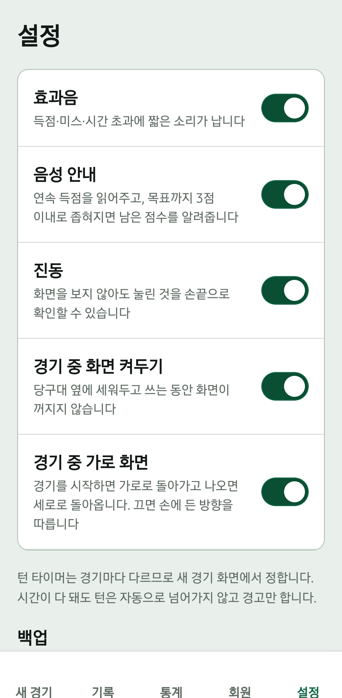
- 새 경기 — 종목(3쿠션·4구)과 대대·중대, 인원을 고르고 선수와 목표점을 정합니다. 시작 버튼 바로 위 한 줄에 이번 경기 조건이 모입니다.
- 기록 — 그날 친 경기가 한 모임으로 묶입니다. 성적표는 단톡방에 올리는 그날 결과이고, 기록 보내기는 같이 친 사람 폰에 담기는 기록입니다. 모임을 펼쳐 경기를 누르면 이닝별 득점 격자가 나옵니다.
- 통계 — 위에서 사람을 고르면 그 사람의 에버리지·승률·하이런과 최근 흐름이 나옵니다. 대대·중대와 뱅크 1점·2점은 따로 셉니다.
- 회원 — 함께 치는 사람 목록과 핸디입니다. 회원 자리로 친 판만 그 사람 통계에 쌓입니다. 회원과 손님의 차이
- 설정 — 효과음·음성 안내·진동·화면 켜두기를 고르고, 백업 파일을 만들고, 이 사용 가이드로 다시 올 수 있습니다.
STEP 01
새 경기에서 오늘의 조합을 정하세요.
- 종목과 대수 선택
3쿠션 또는 4구(사구)를 선택하고, 대대·중대를 맞춥니다. 통계가 따로 쌓이므로 실제로 치는 테이블에 맞춰 주세요.
- 인원과 선수 선택
혼자 연습, 2~5인 개인전 또는 2:2 복식을 설정합니다. 이름 옆 버튼에 회원·손님·선택이 표시되어, 이 자리의 기록이 회원에게 쌓이는지 바로 알 수 있습니다. 회원을 고르거나 이름을 입력하고 목표점을 정하세요. 회원과 손님의 차이
- 순서 정하기
자리 번호 두 개를 차례로 누르면 두 사람의 순서가 바뀝니다. 한 번이라도 치고 나면 순서를 바꿀 수 없습니다.
- 경기 규칙 확인
초구 수구, 뱅크샷 점수, 턴 타이머 등 함께 치기로 한 규칙을 확인한 뒤 경기 시작을 누릅니다. 시작 버튼 바로 위에 이번 경기 조건이 한 줄로 정리되어 있으니 마지막으로 확인하세요. 규칙별 설명 보기
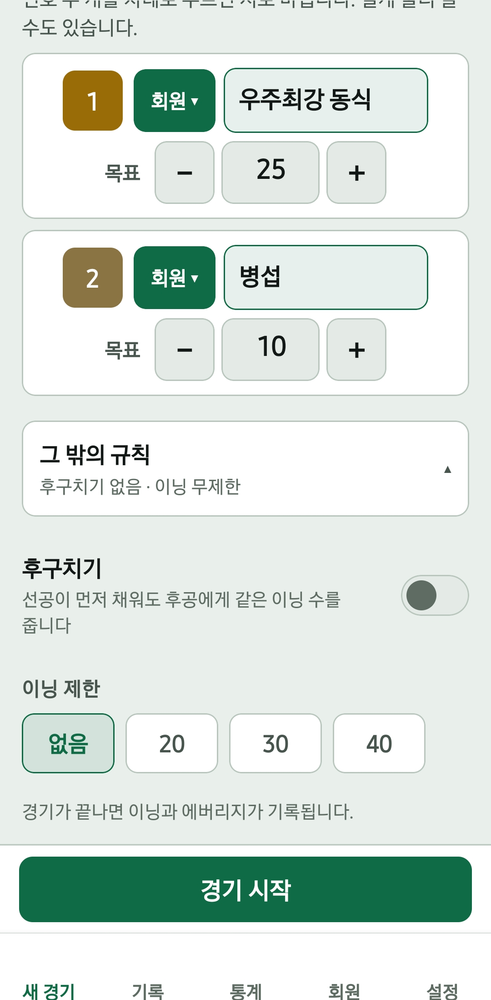
STEP 02
득점을 기록하고, 내 차례가 끝나면 턴 넘기기.
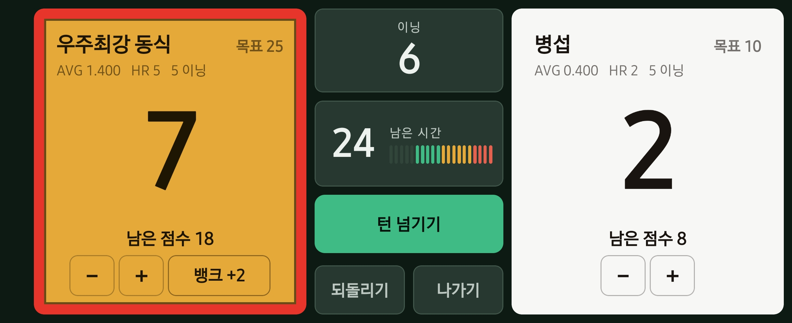
자기 칸을 누르면 득점
차례인 선수의 칸을 누르면 점수가 올라갑니다. + 버튼을 눌러도 같습니다.
차례가 끝나면 턴 넘기기
미스 등으로 내 차례가 끝났을 때 누릅니다. 다른 선수의 칸을 눌러도 턴이 넘어가며 이닝이 기록됩니다.
실수했다면 되돌리기
잘못 입력한 동작은 되돌리기를 사용해 바로잡으세요. 음성 안내와 진동을 켜 두면 「득점 취소」처럼 무엇이 취소됐는지 알려 줍니다.
3명 이상 · 복식 · 4구 점수판 읽기
- 지금 칠 사람의 칸에 빨간 테두리가 둘립니다. 3명 이상이면 기다리는 칸이 옅은 색이 되어, 차례인 칸만 진하게 보입니다.
- 복식은 팀마다 한 칸입니다. 지금 큐를 잡은 사람 이름 앞에 ●가 붙고 이름이 크게 나옵니다. 기다리는 팀의 −·＋는 잠깁니다.
- 4구는 가운데 큰 숫자가 남은 점수이고, 그 아래에 지금까지 낸 득점이 나옵니다. 3쿠션은 큰 숫자가 득점이고 아래가 남은 점수입니다.
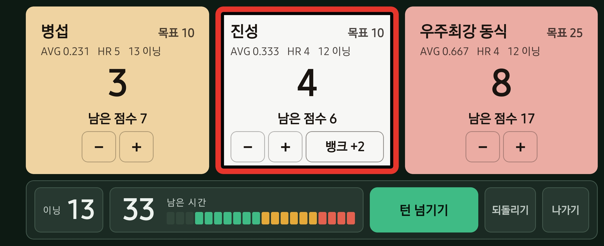
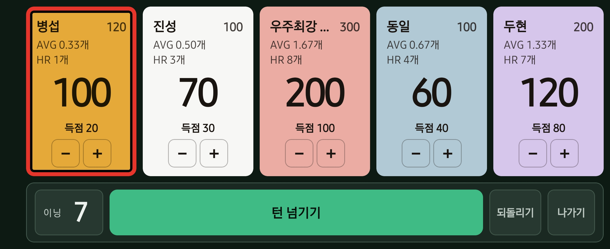
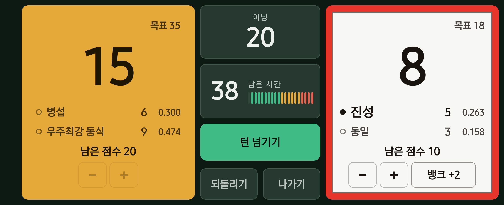
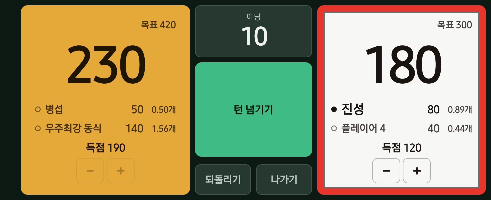
STEP 03
경기가 끝나면, 결과가 내 기록이 됩니다.
득점·이닝·에버리지·하이런과 이닝별 득점 격자를 확인하세요. 같은 조건에서 5경기를 친 회원은 이번 판을 자기 최근 에버리지와 나란히 보여 주고, 최고 기록이면 함께 알려 줍니다. 같은 조합으로 다음 경기를 시작하거나, 기록 보기로 방금 친 판을 바로 열 수 있습니다. 잘못 눌러 끝났다면 결과 화면의 되돌리기로 돌아갈 수 있습니다.
대대·중대를 잘못 고르고 쳤다면 기록에서 그 경기를 열고 대수 고치기를 누르세요. 점수와 이닝은 그대로 두고 통계 칸만 옮깁니다(3쿠션).
경기 도중에 멈출 때는 나가기
나가기를 누르면 세 가지 중에서 고릅니다.
잠시 나가기
경기를 그대로 두고 나갑니다. 다시 들어오면 이어서 칩니다.
여기까지 기록하고 종료
지금까지 친 이닝으로 순위와 에버리지를 내고 기록에 남깁니다.
경기 버리기
지금까지 친 것이 사라집니다. 기록과 통계에 남지 않고 되돌릴 수 없습니다.
회원과 손님 — 기록이 사람에게 쌓이는 방법
에버보드의 회원은 함께 치는 사람의 이름 목록입니다. 온라인 가입이 아니라, 이 폰 안에서 그 사람의 경기를 한데 묶는 표시입니다. 회원 자리로 친 판만 그 사람의 에버리지와 상대 전적에 쌓입니다.
| 무엇이 남나 | 회원 | 손님 |
|---|---|---|
| 기록 탭의 경기 | 남습니다 | 남습니다 |
| 에버리지·통계 | 그 사람에게 쌓입니다 | 쌓이지 않습니다 |
| 상대 전적 | 상대도 회원이면 쌓입니다 | 쌓이지 않습니다 |
| 핸디 | 등록해 두면 목표점으로 채워집니다 | 그 판의 목표점만 씁니다 |
새 경기에서 회원 고르기
자리마다 이름 옆 버튼이 회원·손님·선택(빈 자리)으로 지금 상태를 보여 줍니다. 버튼을 눌러 회원을 고르면 됩니다. 등록된 회원과 같은 이름을 직접 입력해도 회원으로 이어집니다. 이름은 같지만 다른 사람이라면 버튼에서 손님으로 두기를 고르세요.
경기가 끝나면 앱이 물어봅니다
- 이 중에 누가 나인가요? — 처음 한 번만 묻습니다. 고른 사람이 이 폰의 ‘나’가 되어, 통계 탭이 내 기록으로 열리고 새 경기 화면의 1번 자리가 비어 있으면 미리 앉혀 둡니다.
- 회원으로 등록할까요? — 손님으로 친 이름이 있으면 묻습니다. 등록하면 이 판부터 그 사람의 에버리지가 쌓이고, 핸디는 방금 친 목표점으로 채워집니다. 모두 등록으로 한 번에 할 수 있고, 나중에를 고른 이름은 다시 묻지 않습니다.
- 지난 기록도 이어 붙일까요? — 방금 등록한 사람과 이름이 같은 지난 경기가 있으면 묻습니다. 같은 사람이면 이어 붙이고, 이름만 같은 다른 사람이면 그대로 두세요.
회원 탭에서 할 수 있는 것
- 회원 추가와 이름·핸디 고치기
- 각 줄 오른쪽 더보기에서 ‘나’ 지정과 해제, 회원 삭제
- 맨 아래 지난 기록 연결 — 손님으로 남은 지난 경기 가운데 회원과 이름이 같은 자리를 한 번에 이어 붙입니다. 같은 이름의 회원이 둘 이상이면 앱이 대신 고르지 않으니, 이름을 구분해 주세요.
내 당구장에 맞는 설정
설정에서 음성 안내, 효과음, 진동과 화면 켜짐 유지를 조절할 수 있습니다. 조용한 곳에서는 소리를 끄고, 점수판을 멀리 두는 상황에서는 음성 안내를 활용해 보세요.
백업 방법 확인하기